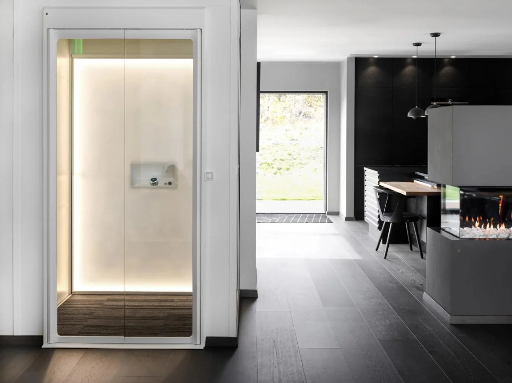
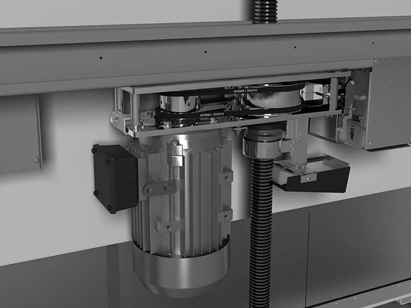
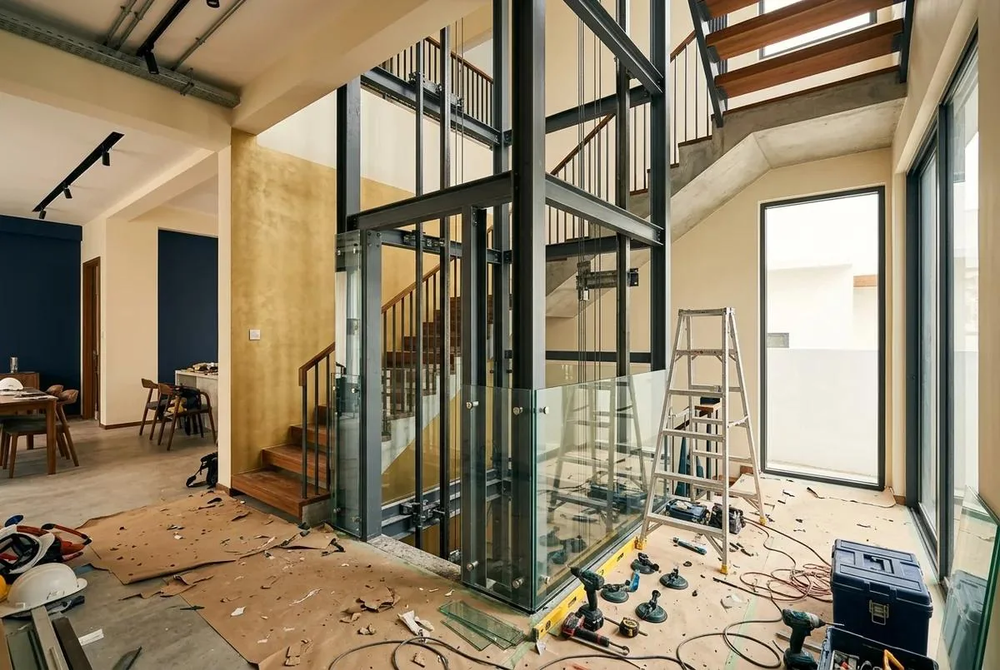

Combien coûte un Home Lift en Algérie ? Prix et éléments à prendre en compte

Vous souhaitez installer un ascenseur dans votre maison ou votre villa et vous vous demandez combien coûte un Home Lift en Algérie ?
Le prix dépend de plusieurs éléments : le nombre d'étages, les dimensions, la technologie choisie, les finitions et les conditions d'installation.
Contrairement à un ascenseur standard, le Home Lift est conçu pour répondre aux contraintes des maisons individuelles. Il existe différentes configurations permettant d'adapter le projet à votre habitation et à votre budget.
Quels éléments déterminent le prix d'un Home Lift ?
Il n'existe pas un tarif unique pour tous les Home Lifts. Plusieurs critères influencent le coût final.
1. Le nombre d'étages à desservir
Plus l'ascenseur dessert de niveaux, plus sa configuration technique peut être importante. Un Home Lift destiné à une maison de deux niveaux n'aura pas nécessairement le même prix qu'une installation desservant trois ou quatre étages. Pour en savoir plus : combien de niveaux peut desservir un Home Lift.
2. Les dimensions et la capacité
La taille de la cabine et la charge utile influencent également le choix du modèle. Un ascenseur compact destiné à une ou deux personnes ne demande pas la même configuration qu'un modèle offrant davantage d'espace et de capacité. Voir aussi quelle place prévoir pour un ascenseur de maison.

3. La technologie du Home Lift
Il existe différentes technologies adaptées à l'habitat individuel :
- Technologie à vis sans fin : une solution compacte, particulièrement adaptée aux maisons et aux villas.
- Technologie hydraulique : une solution éprouvée pour les projets résidentiels, avec la machinerie au pied de la gaine (voir l'hydraulique en pied de gaine).
- Autres technologies : le choix dépend du bâtiment, de la configuration et des performances recherchées.
Chaque technologie présente ses propres caractéristiques et son propre niveau de coût.

4. Les finitions et les équipements
Le prix varie également selon le niveau de personnalisation souhaité :
- Cabine vitrée ou panneaux pleins
- Portes vitrées ou opaques
- Éclairage et décoration intérieure
- Finitions et matériaux
- Commandes et équipements complémentaires
Un Home Lift peut ainsi s'intégrer discrètement à une maison ou devenir un véritable élément architectural.
Faut-il prévoir des travaux supplémentaires ?
C'est un point important à prendre en compte dans le budget. Selon la configuration de votre habitation, il peut être nécessaire de prévoir :
- la création ou l'adaptation de la réservation (trémie) ;
- une fosse traditionnelle ou une solution sans fosse profonde, selon le modèle ;
- des travaux de maçonnerie ;
- des adaptations électriques ;
- la préparation des accès et des paliers.
Certains Home Lifts s'installent avec une réservation réduite et sans fosse traditionnelle : cela limite les travaux, notamment dans une maison déjà construite.

Home Lift ou ascenseur classique : lequel est le plus économique ?
Pour une maison individuelle, le Home Lift présente plusieurs avantages. Sa conception compacte réduit les contraintes d'installation. Il ne demande pas de salle des machines séparée et peut fonctionner en 220 V monophasé, selon le modèle.
Il faut également raisonner en coût global du projet :
- le prix de l'équipement ;
- les travaux préparatoires ;
- l'installation et la mise en service ;
- la consommation électrique ;
- l'entretien périodique.
Le prix d'achat ne doit donc pas être le seul critère de comparaison. Retrouvez le détail dans notre comparatif Home Lift ou ascenseur standard.
Comment obtenir le prix exact de votre Home Lift ?
Pour établir une proposition adaptée, plusieurs informations sont nécessaires :
- le nombre de niveaux à desservir ;
- les dimensions disponibles pour l'installation ;
- la hauteur entre les étages ;
- le type de maison et son état de construction ;
- le style de cabine et les finitions souhaitées.
Un plan architectural ou quelques photos de l'emplacement envisagé permettent déjà de réaliser une première étude. Chez VIP Lift, nous étudions votre projet afin de vous proposer une solution adaptée à votre maison, à vos contraintes techniques et à votre budget.
Quel budget prévoir pour votre projet ?
Le meilleur moyen de connaître le prix d'un Home Lift est de faire étudier votre configuration. Chaque maison est différente : un projet neuf, une villa déjà construite ou une rénovation ne présentent pas les mêmes contraintes.
Pour une première idée, notre simulateur en ligne vous donne un budget approximatif en quelques minutes, selon votre wilaya, le nombre de niveaux et le modèle choisi.
VIP Lift — le confort de l'ascenseur, pensé pour votre maison.